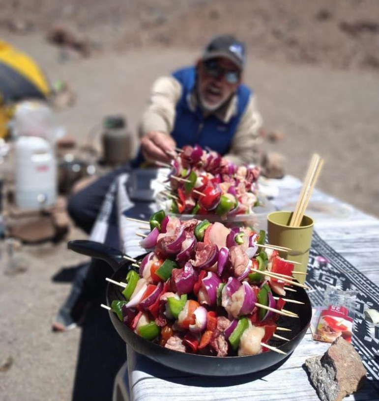
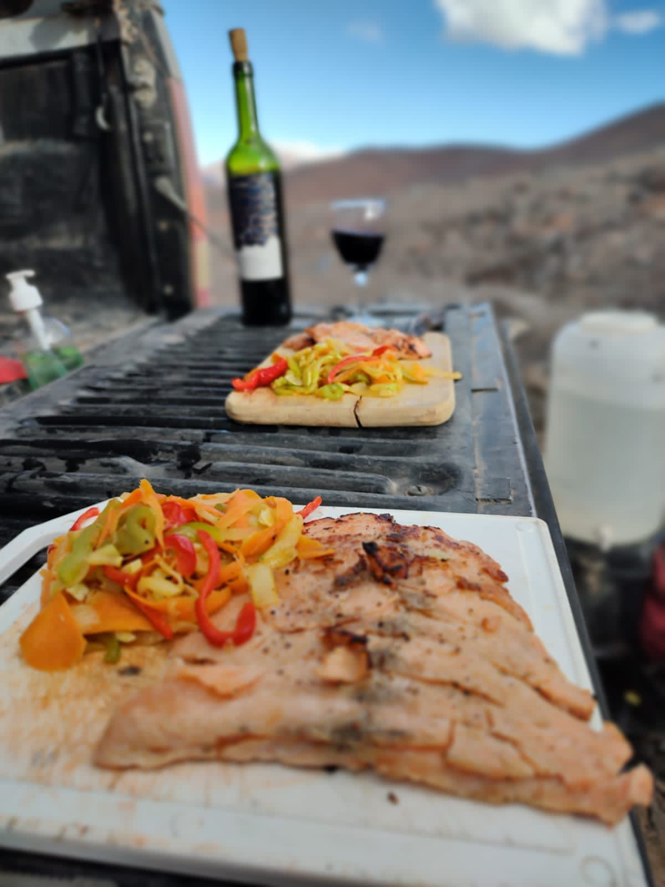
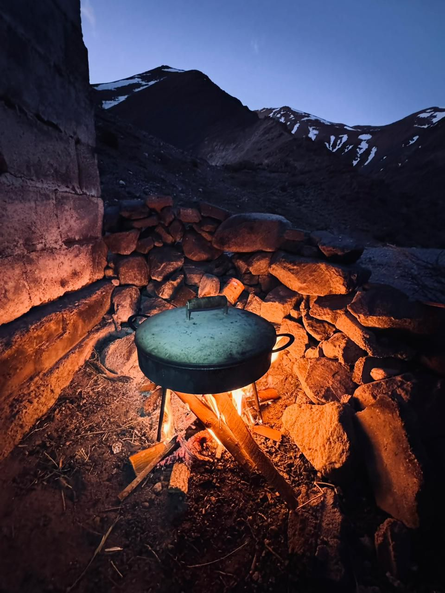

The Madness Expeditions · Argentina
Los Seis
Miles
Tierra de Gigantes


Te acompañamos en cada expedición para crear una aventura única e inolvidable en cada cumbre que quieras conquistar. Nos ocupamos de toda la logística previa y durante el viaje, para que vos solo pienses en llegar a la cima.





